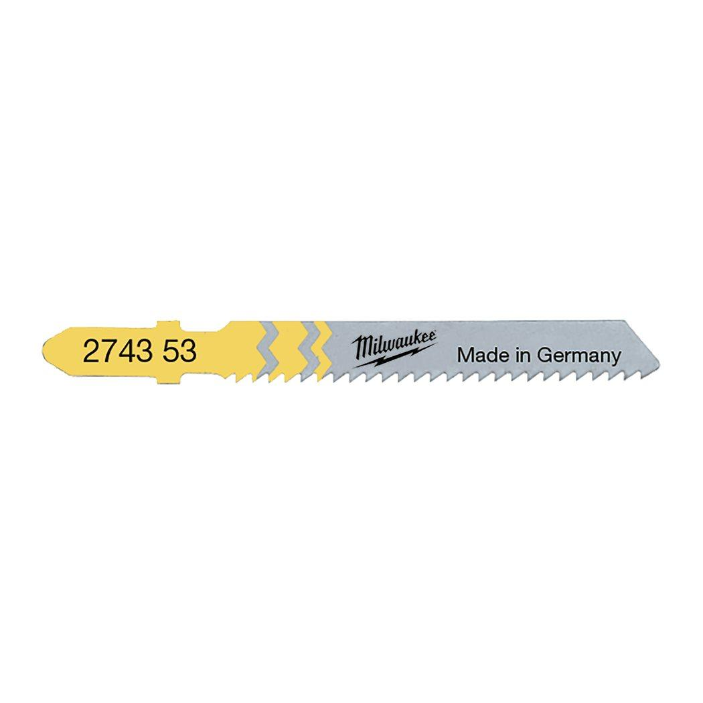
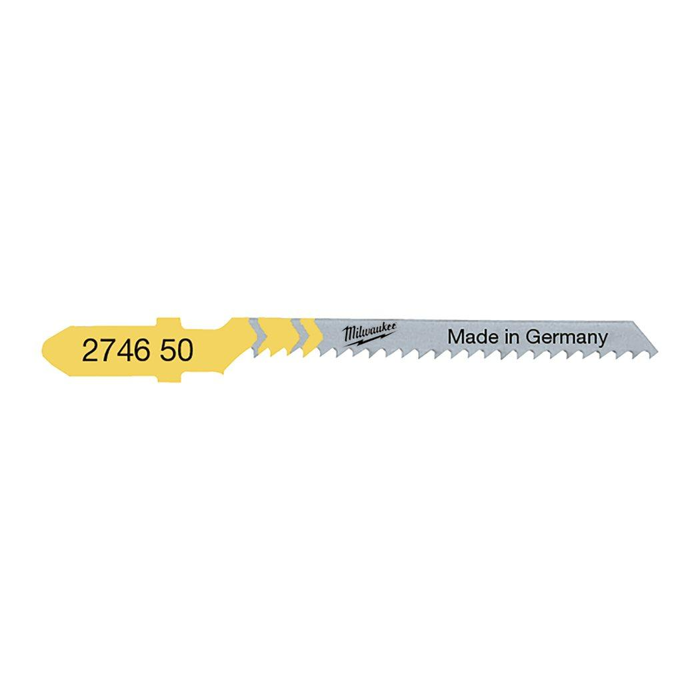
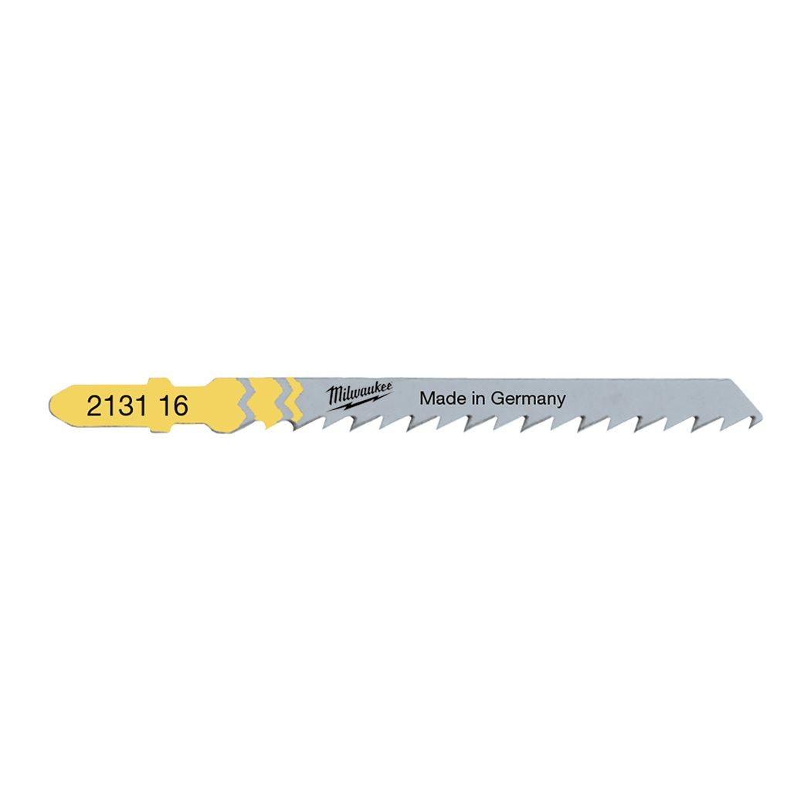
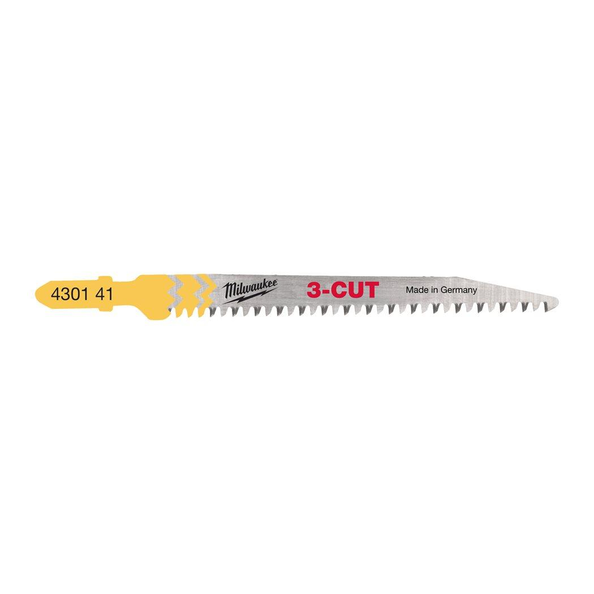
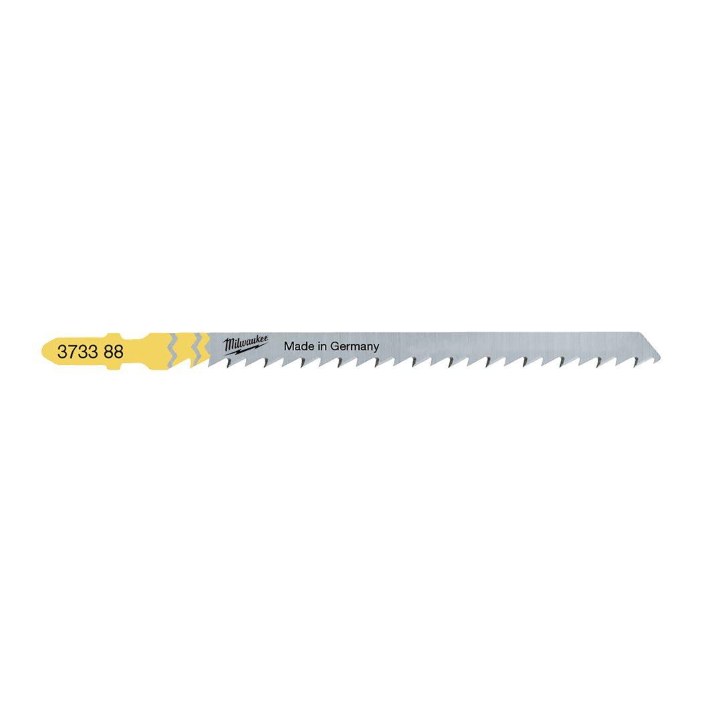
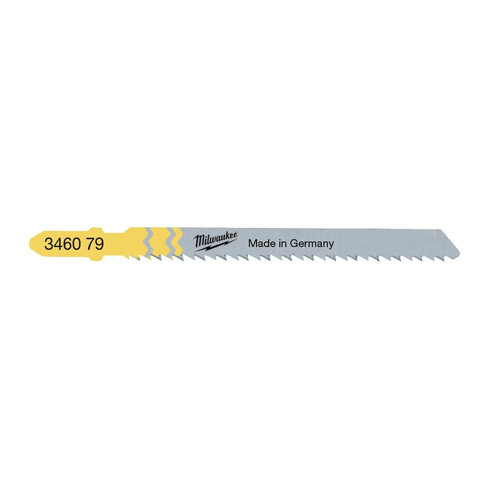

| Blade length (mm) | 75 |
| Materials suited for | Wood|PVC pipe |
| Max. cutting capacity laminated chipboard (mm) | < 60 |
| Max. cutting capacity PVC (mm) | < 45 |
| Max. cutting capacity wood (mm) | < 50 |
| Max. cutting capcity parquet laminate (mm) | No |
| Pack quantity | 5 |
| Ref. No. | T 101 D |
| Rough cut | No |
| Straight cut | No |
| Article Number | 4932274351 |
| EAN | 4002395301515 |